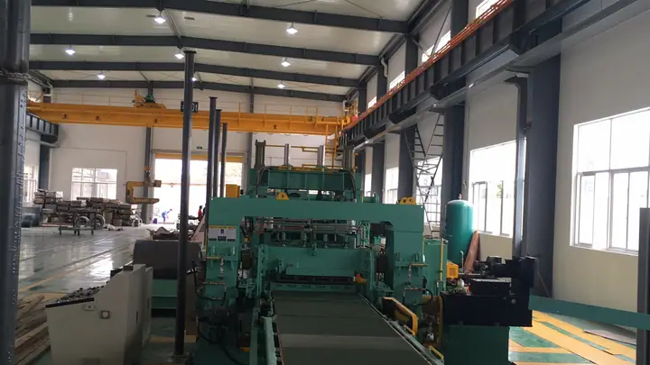

Dây chuyền cắt tấm
Hệ điều khiển cho dây chuyền cắt tấm theo chiều dài (cut-to-length): xả cuộn, nắn phẳng, cấp phôi bằng servo và cắt khi tấm dừng. Cụm nắn phẳng phù hợp cho tấm dày cần độ phẳng cao.
Phù hợp với
- Trung tâm gia công thép cuộn cắt tấm theo chiều dài
- Nhà máy cắt tấm dày cần độ phẳng cao
- Dây chuyền cắt tấm cũ cần nâng cấp cấp phôi và điều khiển
Thông tin cần gửi để báo giá
- Vật liệu, độ dày và khổ rộng
- Chiều dài tấm thường dùng, sai số hiện tại và sai số mong muốn
- Tốc độ hoặc số tấm mỗi phút
- Bộ điều khiển, động cơ, biến tần đang dùng (nếu có)
- Ảnh hoặc video dây chuyền đang chạy
Thay đổi sau khi lắp hệ thống
| Hạng mục | Hiện trạng thường gặp | Với hệ thống CMV |
|---|---|---|
| Định vị cấp phôi | Trượt, định vị chậm | Servo cấp phôi định vị theo chiều dài cài đặt |
| Độ phẳng tấm dày | Chưa đủ phẳng sau nắn | Cụm nắn phẳng cho tấm dày |
| Chu kỳ cắt | Dài, giảm sản lượng | Servo vector tăng, giảm tốc nhanh |
Phạm vi cung cấp
- Cấp phôi
- Servo SVMF, biến tần VFI-CG80
- Bộ điều khiển
- CG định vị chiều dài
- Xả cuộn, nắn phẳng
- Điều khiển theo cấu hình dây chuyền
- Tủ điện
- Tủ điều khiển, tủ MCC
- Độ dày, khổ rộng, tốc độ
- Xác nhận theo từng dây chuyền trong đề xuất kỹ thuật
Điều kiện thương mại
- Khảo sát
- Tại nhà máy hoặc qua ảnh, video và thông số
- Thời gian thi công, dừng máy
- Ghi rõ trong báo giá
- Bảo hành
- Ghi rõ trong báo giá và hợp đồng
- Phụ tùng thay thế
- Cung cấp qua CMV tại Việt Nam
- Hợp đồng, hóa đơn
- Ký với CÔNG TY TNHH CHARGER MECHATRONIC, MST 0319206171

Trên dây chuyền thực tế




Chức năng điều khiển
- Điều khiển bám
- Điều khiển cắt theo chiều dài
- Điều khiển định vị
- Tính toán đường kính cuộn
- Điều khiển chia tải
- Điều khiển đồng bộ
- Điều khiển giàn tích liệu
- Điều khiển lực căng
- Điều khiển tốc độ
- Điều khiển khu vực trữ liệu
- Điều khiển mô-men
- Điều khiển mức
Câu hỏi thường gặp
Dây chuyền cắt tấm khác máy cắt bay thế nào?
Cắt tấm cắt khi tấm dừng; máy cắt bay cắt khi vật liệu vẫn chạy. CMV có hệ điều khiển cho cả hai.
Có thể chỉ nâng cấp phần cấp phôi không?
Có thể. CMV đánh giá hiện trạng và đề xuất phạm vi thay thế phù hợp.
Gọi hoặc nhắn Zalo cho kỹ sư CMV
Giờ làm việc: thứ Hai đến thứ Bảy. Hỗ trợ tiếng Việt, tiếng Trung và tiếng Anh.